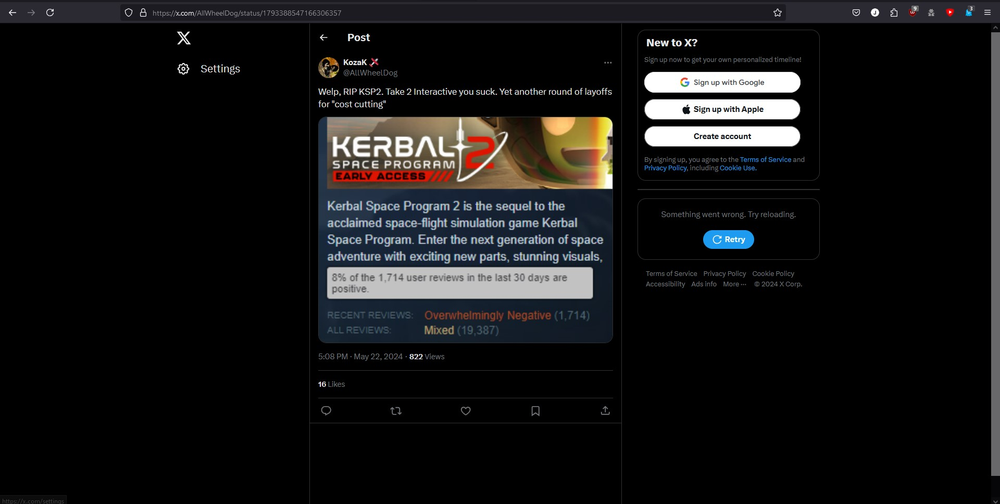

Previous Lab
Space Simulation Game Tier List
| S Tier |
|
Kerbal Space Program |
| A Tier |
|
Spaceflight Simulator |
| B Tier |
|
Space Simulator |
C Tier
|
|
N/A |
| D Tier |
|
Juno New Origins |
FAILURE Tier
|
|
KSP 2, Simple Rockets OG |
My Rationale
Tiering is based on moddability, usability, the learning curve, look and feel, and bugs.
KSP 2 got FAILURE tier because Take Two scammed us and fired all the devs.

Juno New origins AKA Simple rocket's sequel got D tier because of the high learning curve and complex controls.
SFS got A tier for moddability [On PC only :c ].
Space Simulator got B tier because the last time I played it, it didn't have many crafts, but made up for it with amazing autopilot;
preventing it from going to C tier.
Futhermore, Simple Rockets 1 had no maneuvering system or anything. Meaning you had to launch and pray to God that you get an encounter with enough fuel to land.
Enough said. F TIER.
Well, the final's arrived, and I'm keeping my promise.
Here it is.
|
S Tier
|
Kitten Space Agency
|
Have Feedback? Post Here!
Or go to the Next Lab